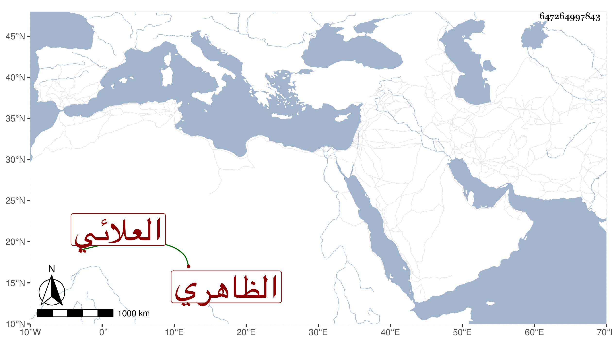

0902Sakhawi.DawLamic.ITO20230111-ara1.EIS1600.647264997843
Biography ID: 647264997843
أحمد بن إينال العلائي الظاهري برقوق والد محمد الآتي . ولد سنة إحدى عشرة وثمانمائة وقرأ في القرآن وكان فيما قال لي ولده يحفظ تحفة الملوك ، وخدم عند قايتباي الجركسي وأدارا فحصل ولم يتعرض الأشرف إينال له بعد انقضاء دولة مخدومه لكون أبيه من خجداشيته بل زاد في الإحسان إليه وحج وانعزل ببيته على خير وستر وبر للفقراء حتى مات في يوم الأحد تاسع المحرم سنة ست وثمانين ودفن من الغد يوم عاشوراء رحمه الله وعفا عنه .
